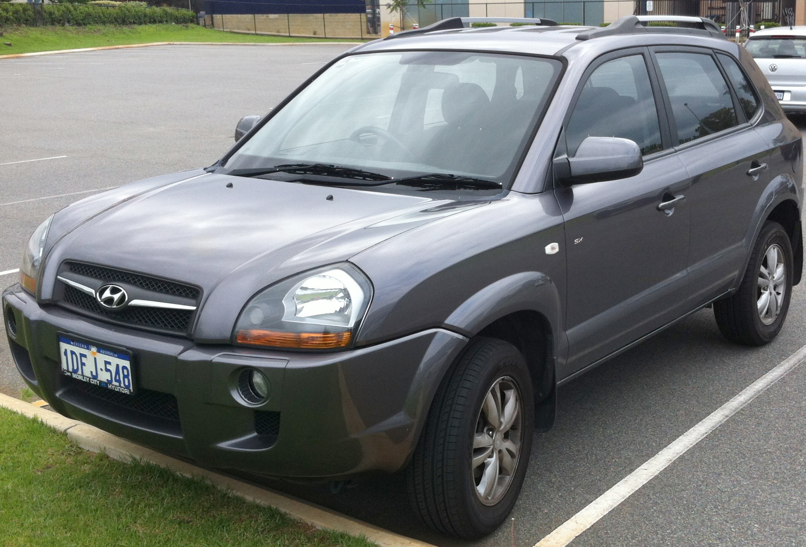

Az első generáció története
A Tucson első generációját 2004-ben dobták piacra és 2009-ig gyártották. Ugyanazt a technikai platformot használja mint a KIA Sportage. A Hyundai felsorolásában a Tucson közvetlenül a Santa Fe alatt helyezkedik el. Az autó a kényelem, a tér és az ár közötti kompromisszum miatt világszerte nagy sikernek számít.
Motorizációk
A Tucson motorjai között volt egy 2,0 L4-es, ötfokozatú kézi váltóval és egy 2,7 V6-os, automata váltóval. Az európai piacok számára az autó 2,0 dízelmotorral is felszerelt, amely 113 LE teljesítményt fejleszt.
